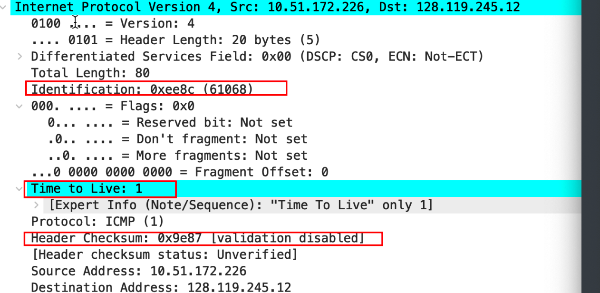

- Select the first ICMP Echo Request message sent by your computer, and expand the Internet Protocol part of the packet in the packet details window.(选择您的计算机发送的第一个 ICMP Echo Request 消息，并在数据包详细信息窗口中展开数据包的 Internet 协议部分)
不知道为什么, 我的电脑只能收到Time to live exceeded报文段.
结果是因为我在过滤了ICMP, 而traceroute默认使用UDP而不是ICMP, 所以只能收到路由器发给我的ICMP time to live exceeded 报文,告诉我的数据包被干掉了.
tracert 默认使用 ICMP 包探测，traceroute 使用 UDP 包，也可以使用 ICMP 和 TCP 包探测, 带上参数-T即可.
-I Use ICMP ECHO instead of UDP datagrams. (A synonym for "-P icmp").traceroute baidu.com 2000
# 使用baidu测试, 默认使用UDP, 数据报大小为2000byte-
What is the IP address of your computer?
-
在 IP header 中，上层协议字段的值是多少?
我的IP地址: 10.51.172.226
这是traceroute发送的第一个数据报, 可以得到以下信息:
- 该数据报是IP数据报, 上层协议为UDP
- 数据报被分片了, More Fragment字段被设为1
- 源IP是10.51.172.226, 这是host IP
- 目标IP是110,242,68,66, 这是Baidu.com的IP地址, 我用百度来测试.
-
IP datagram 的有效负载中有多少 bytes? 说明如何 确定 payload bytes 的数。
payload = Total Len - header Len = 1500 - 20 = 1480, 是的, 我直接发送了2000byte的报文
-
此 IP 数据报是否已被分段(fragmented)?解释您如何确定数据报是否已被分段(fragmented)
是的, 前文有提到, 这里不再赘述.
接下来，通过单击 Source 列标题，根据 IP 源地址对跟踪的数据包进行排序，一个小的向下箭头应出现在 Source 旁边，如果箭头指向上方请再次单击“Source column header”。选择计算机发送的第一个 ICMP Echo Request 消息，然后展开“details of selected packet header”窗口中的 Internet 协议部分。在“listing of captured packets”窗 口中，您应该在第一个 ICMP 下面看到所有后续 ICMP 消息(可能还有计算器上运行的其他协议发送的其他散布数据包)，使用向下箭头浏览计算器发送的 ICMP 消息。
-
在您的计算器发送的这一系列 ICMP 消息中，IP 数据报中的哪些字段总有改变
使用
traceroute -I gaia.cs.umass.edu -80 # 用作者给的网站测试, -I表示使用ICMP # The default probe datagram length is 40 bytes[traceroute manual] # 但是我使用作者提议用56作为数据报(ip datagrame)大小时, 收到以下警告: # traceroute: packet length must be > 71 # 所以这里数据报大小设为80, 实际上, 我使用不带数据报大小参数的命令时, 默认数据报大小为1380再次抓包, 由于traceroute实际上会发送三个ICMP的数据报, 所以三个为一组. 所以可发现每一组的ID值差3, 当然是因为一组发了三个ICMP数据报啊…
第一个:

第二个:
第三个:
可以发现, Id, TTL, Header checksum改变了.
-
哪些字段保持不变? 哪个字段必须保持不变? 哪些字段必须更改? 为什么?
- Version, Header Length , TOS(Differentiate Services Field差异化服务领域), Flag, TTL, Protocol, SIP,DIP保持不变
- Version, Protocol, TOS, Header Len必须保持不变.
- Identification, checksum,TTL必须更改
-
描述您在 IP 数据报的标识字段的值中看到的模式
每发一个ICMP的数据报, ID字段加一(不分片的情况下, 分片时一个IP数据报的不同片具有相同的ID)
- 下一步(数据包仍按来源地址排序)查找最近的(第一跳)路由器发送到您的计算器的一系列 ICMP TTL 超出的回复讯息。
- ID 字段和 TTL 字段的值是多少?
-
对于最近(第一跳)路由器发送到您的计算器的所有 ICMP TTL 超出的回复，这些值是否保持不变?为什么?
TTL保持不变, 但ID改变了. TTL都为64(可以改变, 理论上可以为1, 因为第一台路由器到我的主机一跳可达)
在不管是发回给我的time to live exceeded还是ICMP reply TTL的值都为64, 可能是默认的值.
单击“时间”列，再次按时间对数据包列表进行排序。
- 在将 pingplotter 中的数据包大小更改为 2000 后，查找计算机发送的第一个 ICMP Echo Request 消息。该消息是否已分片为多个 IP 数据报?
- 打印出碎片 IP 数据报的第一个片段。 IP 头中的哪些信息表明数据报已碎片 化? IP 头中的哪些信息表明这是第一个片段还是后一个片段? 这个 IP 数据报有多长?
- 打印出碎片 IP 数据报的第二个片段。 IP 标头中的哪些信息表明这不是第一 个数据报片段? 是否还有更多的片段? 你是如何知道的?
是的, 该消息被分片了, 可以通过flag字段看出, Fragmen Offset 为1480, 而More Fragment为0 ,告诉这是第二个message, 那第一个到哪里去了呢?
Wireshark告诉我在frame 73, 于是我去寻找frame73
73frame和74frame的payload 和 为 1980, 因为规定了ICMP的IP数据报大小为2000, 但由于IP头部的20byte, 实际的payload恰好为1980byte
注意到发到第一个message竟然不是ICMPmessage, 而是一个IPdatagram
打开IP头部, 我们发现, 这仍然是一个ICMP的数据报, 但是在IP的数据部分并没有ICMP头部.
-
在第一个和第二个片段中，IP 标头中哪些字段发生了变化?
第一个fregment:
第二片:
注意到红色部分发送了改变, 而蓝色部分没有改变, IP数据报用ID来标识多个片是否属于同一个IP数据报.
现在，在将 pingplotter 中的数据包大小更改为 3500 后，找到计算机发送的第一个 ICMP Echo Request 消息。
-
从原始数据报创建了多少个片?
三个片
-
片段中 IP 标头中的哪些字段发生了变化?
和上一个结论相同, 红色部分发送了改变, 而蓝色部分没有改变, IP数据报用ID来标识多个片是否属于同一个IP数据报.